TCP Implementation
TCP Segments
So far, we’ve been talking about TCP conceptually, in terms of individual packets being sent. But the application doesn’t provide us with pre-made packets that we can directly send into the Layer 3 network. The application is relying on a bytestream abstraction, and is instead sending us a continuous stream of bytes. In order to fully implement TCP, we’ll need to rethink all of our previous ideas (e.g. sequence numbers, window size, etc.) in terms of bytes, not packets. (You should still be able to reason about the design choices in terms of both bytes or packets, though.)
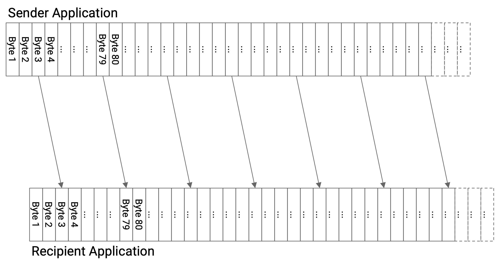
In order to form packets out of bytes in the bytestream, we’ll introduce a unit of data called a TCP segment. The TCP implementation at the sender will collect bytes from the bytestream, one by one, and place those bytes into a TCP segment. When the TCP segment is full (reaches a fixed maximum segment size), we send that TCP segment, and then start a new TCP segment.
Sometimes, the sender wants to send less data than the maximum segment size. In that case, we wouldn’t want the TCP segment to be waiting forever for more bytes that never come. To fix this, we’ll start a timer every time we start filling a new empty segment. If the timer expires, we’ll send the TCP segment, even if it is not full yet.
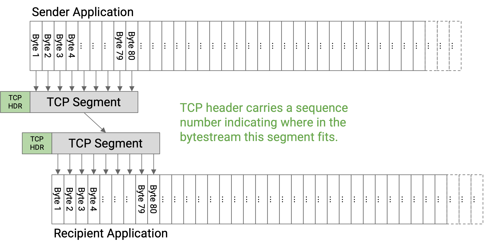
Before sending the data in a TCP segment, the sender’s TCP implementation will add a TCP header with relevant metadata (e.g. sequence number, port numbers). Then, the segment and header are passed down to the IP layer, which will attach an IP header and send the packet through the network.
The TCP segment, with a TCP header and IP header on top, is sometimes called a TCP/IP packet. Equivalently, this is an IP packet whose payload consists of a TCP header and data.
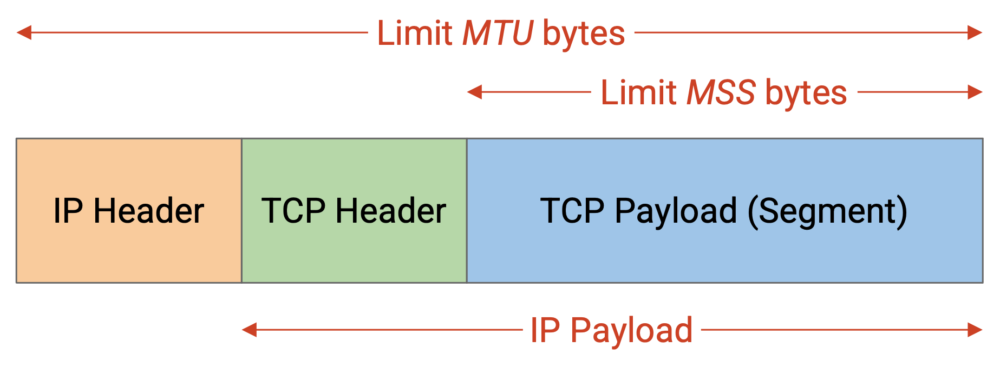
How should the maximum segment size (MSS) be set? Recall that the size of an IP packet is limited by the maximum transmission unit (MTU) along each link. However, the IP packet must also contain the IP and TCP header, so the TCP maximum segment size is going to be slightly smaller than the IP maximum transmission unit. Specifically:
MSS (TCP segment limit) = MTU (IP packet limit) - IP header size - TCP header size
Sequence Numbers
So far, we’ve been labeling each packet with a number, so that the recipient can receive packets in the correct order.
In practice, instead of numbering individual segments, we assign a number to every byte in the bytestream. Each segment’s header will contain a sequence number corresponding to the number of the first byte in that segment. The recipient can still use sequence numbers to figure out where each segment fits in the bytestream, and reassemble the segments in the correct order.
Each bytestream starts with an initial sequence number (ISN). The sender chooses an ISN and labels the first byte with number ISN+1, the next byte with number ISN+2, the next byte with ISN+3, and so on.
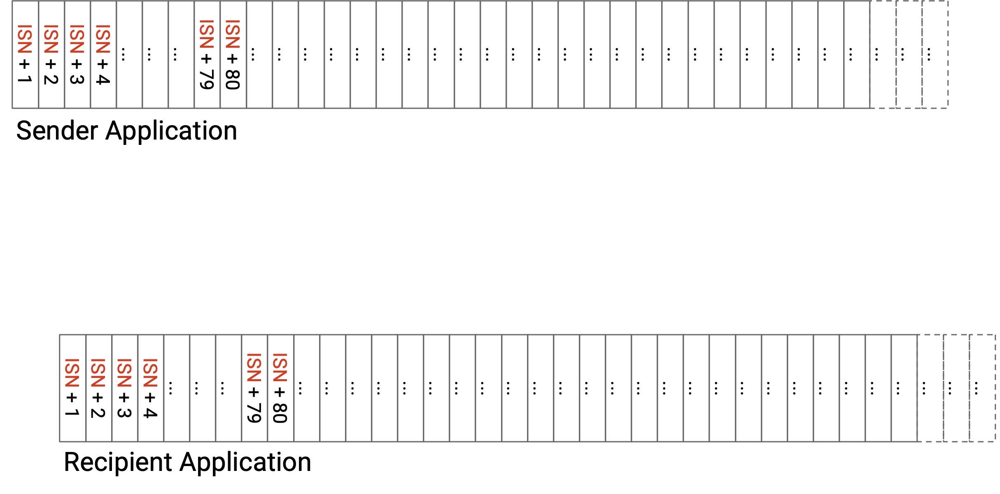
Since we’re now numbering bytes instead of packets, acknowledgement numbers will also now be in terms of bytes, not packets. Specifically, the acknowledgement number says, I have received all bytes up to, but not including, this number. Equivalently, the acknowledgement number represents the next byte it expects to receive (but has not received yet). Note that TCP is using the cumulative ack model (as opposed to full-information acks or individual byte acks).
As an example, suppose the ISN has randomly been chosen to be 50. Then the first few bytes have numbers 51, 52, 53, etc. A specific TCP segment might contain the bytes 140 to 219, inclusive. The sequence number of this segment is 140 (representing the first byte in the segment). If the recipient has received everything so far, the recipient can acknowledge this segment by sending an ack number of 220, which is the next byte that has not been received yet.
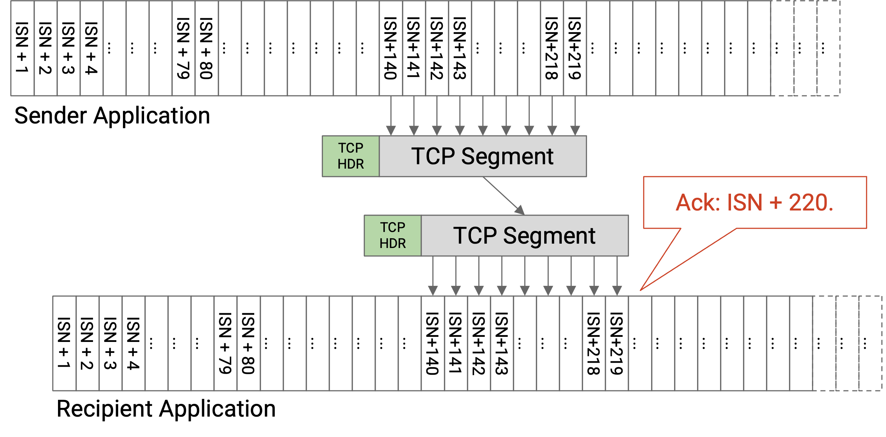
More generally, suppose we have a packet where the first byte has sequence number X, and the packet has B bytes. This packet has the bytes X, X+1, X+2, …, X+B-1. If this packet (and all prior data) is received, the ack will acknowledge X+B (the next expected byte). If this packet is not received, or this packet is received but some prior packet was not received, then the ack will acknowledge some smaller number (because TCP uses cumulative acks).
More generally, suppose we had many packets, all B bytes long. The ISN is X, and the window size is 1 (stop-and-wait protocol, only one packet or ack being sent at once). Assume that no packets are dropped. Then, the sequence and ack numbers would proceed as follows: The first packet has sequence number X. The first ack has ack number X+B. The second packet has sequence number X+B. The second ack has ack number X+2B. The third packet has sequence number X+2B, and so on. In particular, note that when there’s no loss, the ack number corresponds to the next packet’s sequence number.
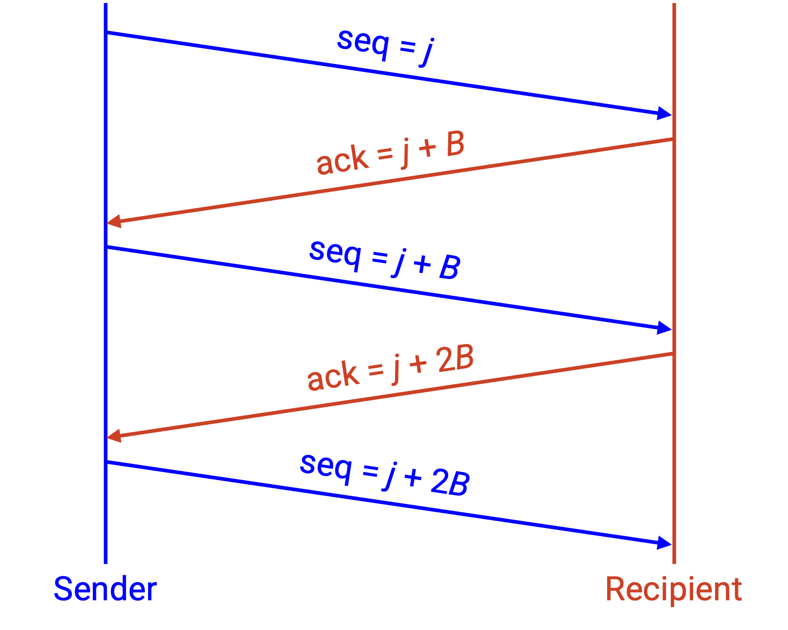
Historically, the ISN was chosen to be random because the designers were concerned about ambiguous sequence numbers if all bytestreams started numbering at 0. Specifically, suppose a TCP connection sends some data starting at ISN 0, and then the sender crashes. If the sender restarts a new connection, and the ISN starts at 0 again, the recipient might get confused if it sees a packet with sequence number 0. Is this packet from the first connection before the crash, or the second connection after the crash?
In practice, the ISN is chosen to be random for security reasons. If the ISN is chosen in a predictable way, attackers can deduce the ISN and send spoofed packets that look like they’re coming from the sender. When the ISN is chosen randomly, it’s harder for the attacker to deduce the ISN and send spoofed packets.
TCP State
In TCP, both the sender and recipient need to maintain state. The state is maintained at the end hosts implementing TCP, not in the network.
The sender has to remember which bytes have been sent but not acknowledged yet. The sender also has to keep track of various timers, e.g. a timer for when to send a less-than-full segment, and a timer for when to resend bytes.
The recipient has to remember the out-of-order bytes that can’t be delivered to the application yet.
Because TCP requires storing state, each bytestream is called a connection or session, and TCP is a connection-oriented protocol. Unlike Layer 3, where every packet could be considered separately, TCP requires both parties to establish a connection and initialize state before data can be sent. TCP also needs a mechanism to tear down connections to free up the memory allocated for state on both end hosts.
TCP is Full Duplex
So far, we’ve seen TCP as a bytestream from one end host (the sender) to the other end host (recipient). In practice, the two end hosts often want to send messages in both directions.
To support sending messages in both directions, TCP connections are full duplex. Instead of designating one sender and one recipient, both end hosts in the connection can send and receive data simultaneously, in the same connection.
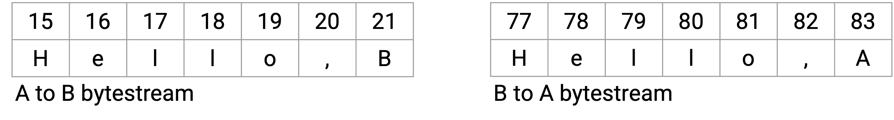
To support sending data in both directions, each TCP connection has two bytestreams: one containing data from A to B, and the other containing data from B to A. Each packet can contain both data and acknowledgement information. The sequence number would correspond to the sender’s bytestream (the bytes I am sending), and the acknowledgement number would correspond to the recipient’s bytestream (the bytes I received from you).
TCP Handshake
Recall that TCP is connection-oriented, so connections must be explicitly created and destroyed. Also, recall that bytestreams start at a randomly-selected initial sequence number (ISN), and that each TCP connection is full-duplex (two bytestreams, one in each direction). When we create a new connection, we need both sides to agree on two starting ISNs (one per direction).
To establish a TCP connection, the two hosts perform a three-way handshake to agree on the ISNs in each direction.
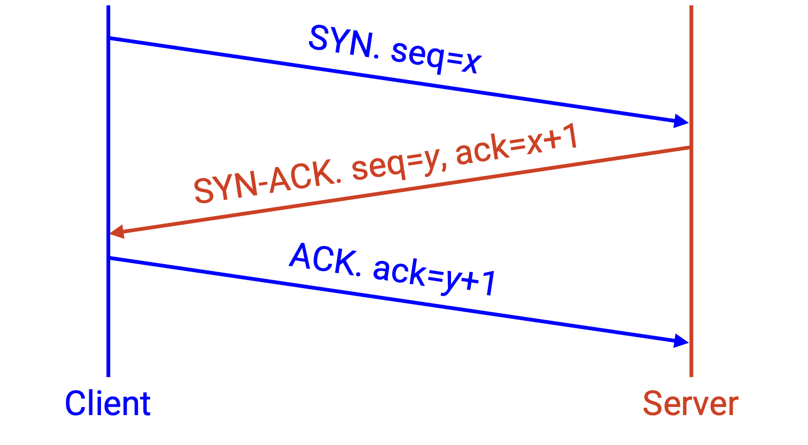
The first packet (from A to B) is the SYN message. This message contains A’s ISN (data from A to B will start counting at this ISN), in the sequence number.
The second packet (from B to A) is the SYN-ACK message. This message contains B’s ISN (data from B to A will start counting at this ISN), in the sequence number. This message also acknowledges that B has received of A’s ISN, in the ack number.
The third packet (from A to B again) is the ACK message. This message acknowledges that A has received B’s ISN, in the ack number.
This handshake is why bytestreams start counting at ISN+1. When I send an ISN, the ack is ISN+1, indicating that the ISN was received, and the next (first) byte expected is ISN+1.
After the three-way handshake concludes, B can start sending data.
Ending Connections
There are two ways to end a connection.
In normal cases, when I am done sending messages, I can send a special FIN packet, which says: I will not send any more data, but I will continue to receive data if you have any more to send. At this point, the connection is half-closed. This packet will be acked, just like any other packet.
Eventually, the other side will also finish sending data and send a FIN packet. When this FIN packet is acked, the connection is closed.
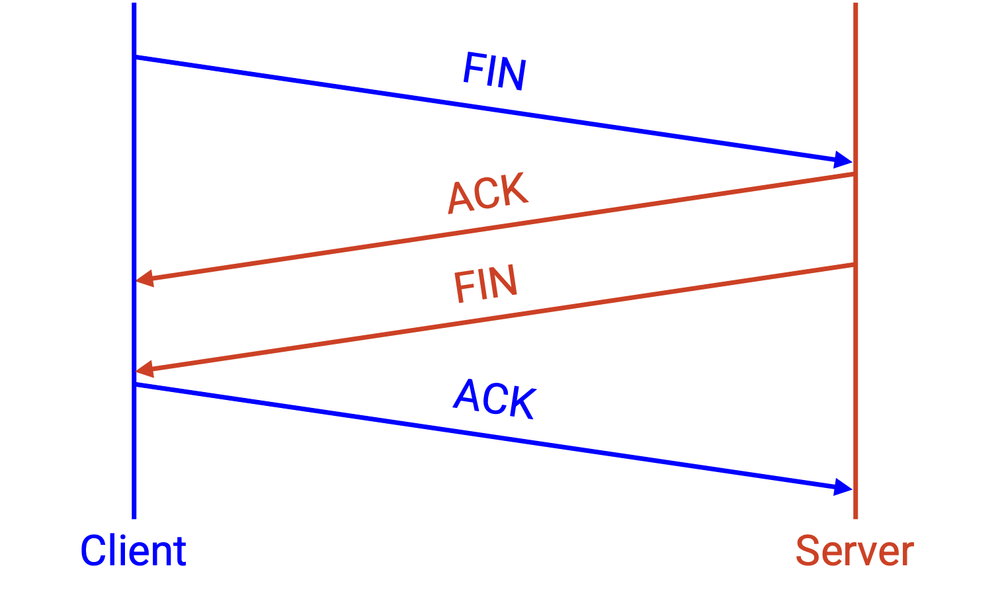
Sometimes, we have to terminate a connection abruptly, without the agreement of the other side. To unilaterally end a connection, I can send a special RST packet, which says: I will not send or receive any more data. This packet does not have to be acked, and I can tear down my connection as soon as I send this data.
RST packets are often used when a host encounters an error and is unable to continue sending or receiving packets. Note that any in-flight data is lost if a RST occurs and the end host crashes and loses its state.
If I sent a RST, and someone continues sending me data, if I am able, I will continue to send copies of the RST packet to repeatedly try and terminate the connection.
RST packets can also be used by attackers to censor connections. An attacker can spoof and inject a RST packet, which causes the entire connection to terminate.
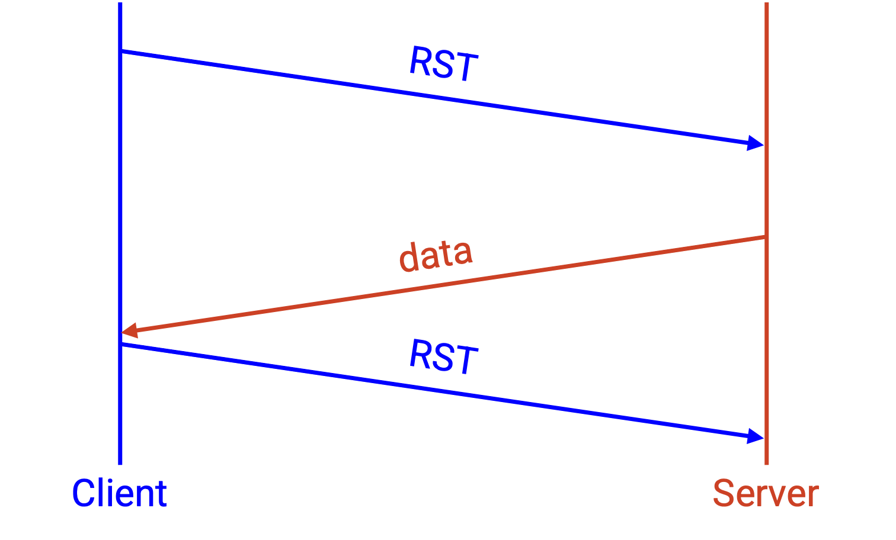
The full TCP state diagram is quite complicated, with many intermediate states in the process of opening or closing a connection. Examples of intermediate states include: I have sent a SYN, and am waiting for a SYN-ACK. Or, I have received a FIN, sent my FIN, but am waiting for my FIN to be acked. Most TCP connections spend most of their time in the Established state, where the connection has started (but not ended), and data is being exchanged back-and-forth. You don’t need to understand this full state diagram for these notes.
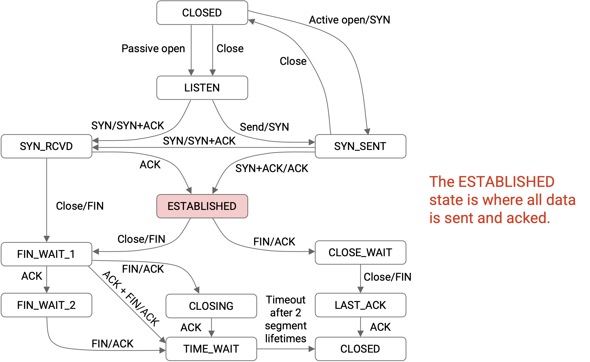
In the simplified state diagram, we start in the closed state (no connection in progress). To start a connection, we send a SYN. Eventually, we receive a SYN-ACK and reply with an ACK, moving to an established connection. When we’re done sending data, we send a FIN, and receive an ACK. Eventually, we receive a FIN, and the connection is closed again.
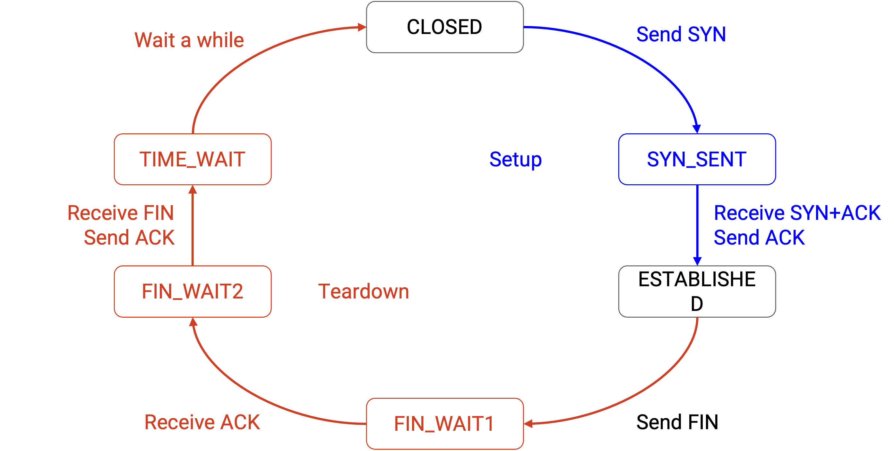
Piggybacking
Because TCP is full duplex, it’s possible for a packet to both acknowledge some data and send new data.
When the recipient gets a packet, if it has no data to send, the recipient has two choices. The recipient could either immediately send the ack, with no data to send. Or, the recipient could wait until it has some data to send, and then send the ack with the new data. This latter approach is called piggybacking.
In practice, one reason we might not piggyback is because TCP is implemented in the operating system, separate from the application.
Consider the operating system, which has no idea what the application code is doing. When the operating system receives a packet, it doesn’t know when the sender will have more data to send (or if the sender will ever have more data to send), so it might be stuck waiting a long time before it’s able to piggyback the ack with some new data.
On the other side, consider the application, which has no idea what the operating system is doing. The application is running on the bytestream abstraction, and isn’t thinking about packets at all, so it has no way to think about piggybacking at all.
Piggybacking is further complicated by the fact that the operating system isn’t running every program simultaneously. Thinking back to a computer architecture course (like CS 61C at UC Berkeley), the CPU is constantly switching between different processes on your computer, depending on what needs attention. It would be pretty silly if, every time a TCP packet arrived, the CPU interrupted what it was doing to pass that packet to the application, and gave the application some time to respond. Instead, when a TCP packet arrives, the operating system might send out the ack, before the application gets a chance to piggyback new data on the ack.
One case where data is always piggybacked is the SYN-ACK packet in the handshake. In addition to the ack, we’re piggybacking our own initial sequence number. This doesn’t have the problem discussed above, since the TCP handshake is entirely performed by the operating system. (The application isn’t thinking about SYN or SYN-ACK packets at all.)
Sliding Window
When we discussed packets, we defined the window as the number of packets that could be in flight at any given time. Now that we’re implementing TCP in terms of bytes, we’ll define the sliding window as the maximum number of contiguous bytes that can be in flight at any given time.
The restriction of the in-flight bytes being contiguous is different from before. Our packet-based window definition allowed for non-contiguous packets (e.g. 5, 7, 8) to be in-flight. However, the bytes in flight are required to be consecutive, with no gaps. This requirement creates a window (range of bytes) in the byte stream.
The left side of the window is the first unacknowledged byte (as determined by the ack number from the recipient). Starting at this byte, the next W bytes, up to the right side of the window, can be in-flight.
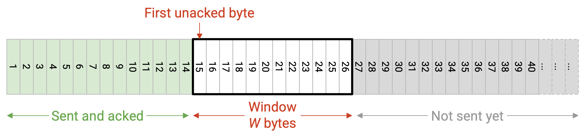
Note that even if some of the intermediate bytes in this window were acknowledged, we still cannot send more bytes beyond the window. The only way we can send more bytes is if the window slides to the right, i.e. when the ack number increases (bytes on the left side of the window are acknowledged).
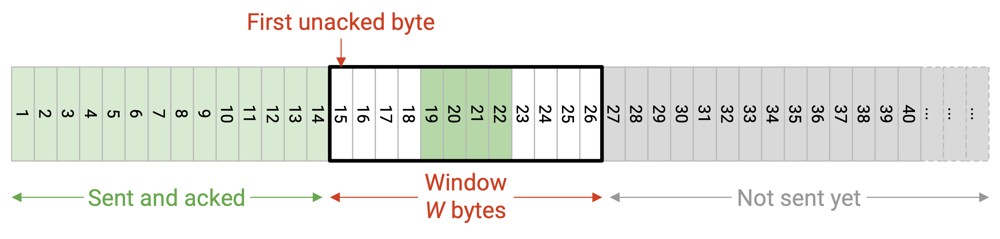
Recall that the window size (which determines the right edge of the window) is limited by flow control and congestion control. In the case of flow control, the window size is decided by the window advertised by the recipient. The recipient decides the advertised window based on the amount of buffer space available on the receiver end.
Detecting Loss and Re-Sending Data
There are two conditions for data to be re-sent. Only one condition (not both) needs to be true to trigger a re-send.
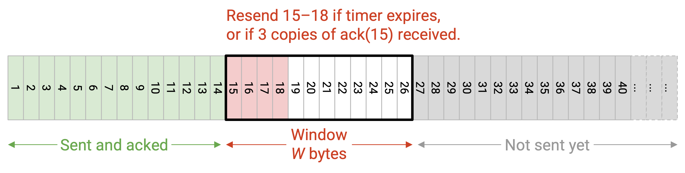
The first trigger for retransmission is a timer (data not acknowledged after some time). In packet-based TCP, every packet had a timer, and when the timer expired without that packet being acked, we would re-send that packet.
In byte-based TCP, instead of one timer per byte or per packet, we will only have a single timer, corresponding to the first unacknowledged byte (left side of the window). If the timer expires, we will re-send the left-most unacknowledged segment. Recall that the timer length is based on the RTT, and the RTT is estimated using measurements of the time between sending data and receiving an ack. Also, recall that the timer is reset every time a new ack arrives (and the window changes).
The second trigger for retransmission is assuming that data is lost when we receive acks for subsequent packets. In packet-based TCP with cumulative acks (which is what TCP uses), we would re-send a packet if we received K duplicate acks (K=3 is common), which indicated that three subsequent packets were acknowledged.
In byte-based TCP, if we receive K duplicate acks, we will re-send the left-most unacknowledged segment.
TCP Header
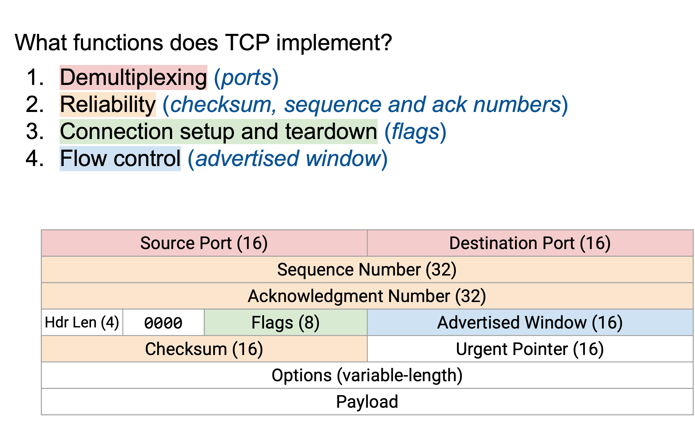
The TCP header has 16-bit source and destination ports.
The TCP header has a 32-bit sequence number (byte offset of the first byte in this packet), and a 32-bit acknowledgement number (highest contiguous sequence number received, plus one).
The TCP header has a checksum over the entire data (not just the header), to detect corrupt data.
The TCP header has the advertised window, which is used to support flow control and congestion control.
The header length specifies the number of 4-byte words in the TCP header. Assuming there are no additional options, this length is 5.
The flags are a sequence of bits that can be set to 1 or 0. When a bit is set to 1, the corresponding flag is enabled. Everybody understands the semantics of the header, so they know which bits correspond to which flags. There are four relevant flags for these notes.
The SYN (synchronize) flag is turned on when the host is sending its ISN. This flag is usually only enabled in the first two messages of the three-way handshake.
The ACK (acknowledge) flag is turned on when the acknowledgment number is relevant and being used to ack data. If I want to send data, but didn’t receive any data that needs to be acked, I can turn this flag off, which tells the other host to ignore the ack number.
There are 6 reserved bits after the header length that are always set to 0. You can safely ignore these.
The urgent pointer can be used to mark certain bytes as urgent, which tells the recipient to send this data to the application as soon as possible. This is a historical field that we won’t cover any further.
The TCP header can have additional options appended to the end (which would make the header longer), but we’ll ignore options for this class. For example, if you wanted to implement full-information acks, there is an option called selective acknowledgements (SACK) that can be added to the header.